Chapter 5: Sensation and Perception¶
Introduction¶
Imagine standing on a city street corner. You might be struck by movement everywhere as cars and people go about their business, by the sound of a street musician’s melody or a horn honking in the distance, by the smell of exhaust fumes or of food being sold by a nearby vendor, and by the sensation of hard pavement under your feet.
We rely on our sensory systems to provide important information about our surroundings. We use this information to successfully navigate and interact with our environment so that we can find nourishment, seek shelter, maintain social relationships, and avoid potentially dangerous situations.
This chapter will provide an overview of how sensory information is received and processed by the nervous system and how that affects our conscious experience of the world. We begin by learning the distinction between sensation and perception. Then we consider the physical properties of light and sound stimuli, along with an overview of the basic structure and function of the major sensory systems. The chapter will close with a discussion of a historically important theory of perception called Gestalt.
5.1 Sensation versus Perception¶
Learning Objectives
By the end of this section, you will be able to:
- Distinguish between sensation and perception
- Describe the concepts of absolute threshold and difference threshold
- Discuss the roles attention, motivation, and sensory adaptation play in perception
Sensation¶
What does it mean to sense something? Sensory receptors are specialized neurons that respond to specific types of stimuli. When sensory information is detected by a sensory receptor, sensation has occurred. For example, light that enters the eye causes chemical changes in cells that line the back of the eye. These cells relay messages, in the form of action potentials (as you learned when studying biopsychology), to the central nervous system. The conversion from sensory stimulus energy to action potential is known as transduction.
You have probably known since elementary school that we have five senses: vision, hearing (audition), smell (olfaction), taste (gustation), and touch (somatosensation). It turns out that this notion of five senses is oversimplified. We also have sensory systems that provide information about balance (the vestibular sense), body position and movement (proprioception and kinesthesia), pain (nociception), and temperature (thermoception).
The sensitivity of a given sensory system to the relevant stimuli can be expressed as an absolute threshold. Absolute threshold refers to the minimum amount of stimulus energy that must be present for the stimulus to be detected 50% of the time. Another way to think about this is by asking how dim can a light be or how soft can a sound be and still be detected half of the time. The sensitivity of our sensory receptors can be quite amazing. It has been estimated that on a clear night, the most sensitive sensory cells in the back of the eye can detect a candle flame 30 miles away (Okawa & Sampath, 2007). Under quiet conditions, the hair cells (the receptor cells of the inner ear) can detect the tick of a clock 20 feet away (Galanter, 1962).
It is also possible for us to get messages that are presented below the threshold for conscious awareness—these are called subliminal messages. A stimulus reaches a physiological threshold when it is strong enough to excite sensory receptors and send nerve impulses to the brain: This is an absolute threshold. A message below that threshold is said to be subliminal: We receive it, but we are not consciously aware of it. Over the years there has been a great deal of speculation about the use of subliminal messages in advertising, rock music, and self-help audio programs. Research evidence shows that in laboratory settings, people can process and respond to information outside of awareness. But this does not mean that we obey these messages like zombies; in fact, hidden messages have little effect on behavior outside the laboratory (Kunst-Wilson & Zajonc, 1980; Rensink, 2004; Nelson, 2008; Radel, Sarrazin, Legrain, & Gobancé, 2009; Loersch, Durso, & Petty, 2013).
Absolute thresholds are generally measured under incredibly controlled conditions in situations that are optimal for sensitivity. Sometimes, we are more interested in how much difference in stimuli is required to detect a difference between them. This is known as the just noticeable difference (jnd) or difference threshold. Unlike the absolute threshold, the difference threshold changes depending on the stimulus intensity. As an example, imagine yourself in a very dark movie theater. If an audience member were to receive a text message that caused the cell phone screen to light up, chances are that many people would notice the change in illumination in the theater. However, if the same thing happened in a brightly lit arena during a basketball game, very few people would notice. The cell phone brightness does not change, but its ability to be detected as a change in illumination varies dramatically between the two contexts. Ernst Weber proposed this theory of change in difference threshold in the 1830s, and it has become known as Weber’s law: The difference threshold is a constant fraction of the original stimulus, as the example illustrates.
Perception¶
While our sensory receptors are constantly collecting information from the environment, it is ultimately how we interpret that information that affects how we interact with the world. Perception refers to the way sensory information is organized, interpreted, and consciously experienced. Perception involves both bottom-up and top-down processing. Bottom-up processing refers to sensory information from a stimulus in the environment driving a process, and top-down processing refers to knowledge and expectancy driving a process, as shown in Figure 5.2 (Egeth & Yantis, 1997; Fine & Minnery, 2009; Yantis & Egeth, 1999).
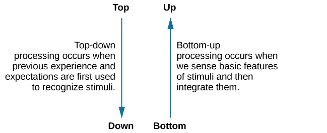
Imagine that you and some friends are sitting in a crowded restaurant eating lunch and talking. It is very noisy, and you are concentrating on your friend’s face to hear what they are saying, then the sound of breaking glass and clang of metal pans hitting the floor rings out. The server dropped a large tray of food. Although you were attending to your meal and conversation, that crashing sound would likely get through your attentional filters and capture your attention. You would have no choice but to notice it. That attentional capture would be caused by the sound from the environment: it would be bottom-up.
Alternatively, top-down processes are generally goal directed, slow, deliberate, effortful, and under your control (Fine & Minnery, 2009; Miller & Cohen, 2001; Miller & D'Esposito, 2005). For instance, if you misplaced your keys, how would you look for them? If you had a yellow key fob, you would probably look for yellowness of a certain size in specific locations, such as on the counter, coffee table, and other similar places. You would not look for yellowness on your ceiling fan, because you know keys are not normally lying on top of a ceiling fan. That act of searching for a certain size of yellowness in some locations and not others would be top-down—under your control and based on your experience.
One way to think of this concept is that sensation is a physical process, whereas perception is psychological. For example, upon walking into a kitchen and smelling the scent of baking cinnamon rolls, the sensation is the scent receptors detecting the odor of cinnamon, but the perception may be “Mmm, this smells like the bread Grandma used to bake when the family gathered for holidays.”
Although our perceptions are built from sensations, not all sensations result in perception. In fact, we often don’t perceive stimuli that remain relatively constant over prolonged periods of time. This is known as sensory adaptation. Imagine going to a city that you have never visited. You check in to the hotel, but when you get to your room, there is a road construction sign with a bright flashing light outside your window. Unfortunately, there are no other rooms available, so you are stuck with a flashing light. You decide to watch television to unwind. The flashing light was extremely annoying when you first entered your room. It was as if someone was continually turning a bright yellow spotlight on and off in your room, but after watching television for a short while, you no longer notice the light flashing. The light is still flashing and filling your room with yellow light every few seconds, and the photoreceptors in your eyes still sense the light, but you no longer perceive the rapid changes in lighting conditions. That you no longer perceive the flashing light demonstrates sensory adaptation and shows that while closely associated, sensation and perception are different.
There is another factor that affects sensation and perception: attention. Attention plays a significant role in determining what is sensed versus what is perceived. Imagine you are at a party full of music, chatter, and laughter. You get involved in an interesting conversation with a friend, and you tune out all the background noise. If someone interrupted you to ask what song had just finished playing, you would probably be unable to answer that question.
Link To Learning
See for yourself how inattentional blindness works by checking out this selective attention test from Simons and Chabris (1999).
One of the most interesting demonstrations of how important attention is in determining our perception of the environment occurred in a famous study conducted by Daniel Simons and Christopher Chabris (1999). In this study, participants watched a video of people dressed in black and white passing basketballs. Participants were asked to count the number of times the team dressed in white passed the ball. During the video, a person dressed in a black gorilla costume walks among the two teams. You would think that someone would notice the gorilla, right? Nearly half of the people who watched the video didn’t notice the gorilla at all, despite the fact that he was clearly visible for nine seconds. Because participants were so focused on the number of times the team dressed in white was passing the ball, they completely tuned out other visual information. Inattentional blindness is the failure to notice something that is completely visible because the person was actively attending to something else and did not pay attention to other things (Mack & Rock, 1998; Simons & Chabris, 1999).
In a similar experiment, researchers tested inattentional blindness by asking participants to observe images moving across a computer screen. They were instructed to focus on either white or black objects, disregarding the other color. When a red cross passed across the screen, about one third of subjects did not notice it (Figure 5.3) (Most, Simons, Scholl, & Chabris, 2000).
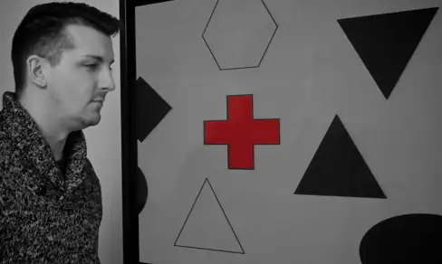
Motivation can also affect perception. Have you ever been expecting a really important phone call and, while taking a shower, you think you hear the phone ringing, only to discover that it is not? If so, then you have experienced how motivation to detect a meaningful stimulus can shift our ability to discriminate between a true sensory stimulus and background noise. The ability to identify a stimulus when it is embedded in a distracting background is called signal detection theory. This might also explain why a mother is awakened by a quiet murmur from her baby but not by other sounds that occur while she is asleep. Signal detection theory has practical applications, such as increasing air traffic controller accuracy. Controllers need to be able to detect planes among many signals (blips) that appear on the radar screen and follow those planes as they move through the sky. In fact, the original work of the researcher who developed signal detection theory was focused on improving the sensitivity of air traffic controllers to plane blips (Swets, 1964).
Our perceptions can also be affected by our beliefs, values, prejudices, expectations, and life experiences. As you will see later in this chapter, individuals who are deprived of the experience of binocular vision during critical periods of development have trouble perceiving depth (Fawcett, Wang, & Birch, 2005). The shared experiences of people within a given cultural context can have pronounced effects on perception. For example, Marshall Segall, Donald Campbell, and Melville Herskovits (1963) published the results of a multinational study in which they demonstrated that individuals from Western cultures were more prone to experience certain types of visual illusions than individuals from non-Western cultures, and vice versa. One such illusion that Westerners were more likely to experience was the Müller-Lyer illusion (Figure 5.4): The lines appear to be different lengths, but they are actually the same length.
![Two vertical lines are shown on the left in (a). They each have V–shaped brackets on their ends, but one line has the brackets angled toward its center, and the other has the brackets angled away from its center. The lines are the same length, but the second line appears longer due to the orientation of the brackets on its endpoints. To the right of these lines is a two-dimensional drawing of walls meeting at 90-degree angles. Within this drawing are 2 lines which are the same length, but appear different lengths. Because one line is bordering a window on a wall that has the appearance of being farther away from the perspective of the viewer, it appears shorter than the other line which marks the 90 degree angle where the facing wall appears closer to the viewer’s perspective point.](img/cnx-psych-05-01-mullerlyer.webp)
These perceptual differences were consistent with differences in the types of environmental features experienced on a regular basis by people in a given cultural context. People in Western cultures, for example, have a perceptual context of buildings with straight lines, what Segall’s study called a carpentered world (Segall et al., 1966). In contrast, people from certain non-Western cultures with an uncarpentered view, such as the Zulu of South Africa, whose villages are made up of round huts arranged in circles, are less susceptible to this illusion (Segall et al., 1999). It is not just vision that is affected by cultural factors. Indeed, research has demonstrated that the ability to identify an odor, and rate its pleasantness and its intensity, varies cross-culturally (Ayabe-Kanamura, Saito, Distel, Martínez-Gómez, & Hudson, 1998).
Children described as thrill seekers are more likely to show taste preferences for intense sour flavors (Liem, Westerbeek, Wolterink, Kok, & de Graaf, 2004), which suggests that basic aspects of personality might affect perception. Furthermore, individuals who hold positive attitudes toward reduced-fat foods are more likely to rate foods labeled as reduced fat as tasting better than people who have less positive attitudes about these products (Aaron, Mela, & Evans, 1994).
5.2 Waves and Wavelengths¶
Learning Objectives
By the end of this section, you will be able to:
- Describe important physical features of wave forms
- Show how physical properties of light waves are associated with perceptual experience
- Show how physical properties of sound waves are associated with perceptual experience
Visual and auditory stimuli both occur in the form of waves. Although the two stimuli are very different in terms of composition, wave forms share similar characteristics that are especially important to our visual and auditory perceptions. In this section, we describe the physical properties of the waves as well as the perceptual experiences associated with them.
Amplitude and Wavelength¶
Two physical characteristics of a wave are amplitude and wavelength (Figure 5.5). The amplitude of a wave is the distance from the center line to the top point of the crest or the bottom point of the trough. Wavelength refers to the length of a wave from one peak to the next.
![A diagram illustrates the basic parts of a wave. Moving from left to right, the wavelength line begins above a straight horizontal line and falls and rises equally above and below that line. One of the areas where the wavelength line reaches its highest point is labeled “Crest.” A horizontal bracket, labeled “Wavelength,” extends from this area to the next peak. One of the areas where the wavelength reaches its lowest point is labeled “Trough.” A vertical bracket, labeled “Amplitude,” extends from the center line to the “Crest” or from the center line to a “Trough.”](img/cnx-psych-05-02-wave.webp)
Wavelength is directly related to the frequency of a given wave form. Frequency refers to the number of waves that pass a given point in a given time period and is often expressed in terms of hertz (Hz), or cycles per second. Longer wavelengths will have lower frequencies, and shorter wavelengths will have higher frequencies (Figure 5.6).
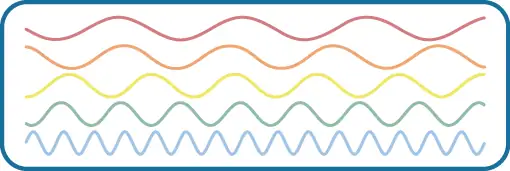
Light Waves¶
The visible spectrum is the portion of the larger electromagnetic spectrum that we can see. As Figure 5.7 shows, the electromagnetic spectrum encompasses all of the electromagnetic radiation that occurs in our environment and includes gamma rays, x-rays, ultraviolet light, visible light, infrared light, microwaves, and radio waves. The visible spectrum in humans is associated with wavelengths that range from 380 to 740 nm—a very small distance, since a nanometer (nm) is one billionth of a meter. Other species can detect other portions of the electromagnetic spectrum. For instance, honeybees can see light in the ultraviolet range (Wakakuwa, Stavenga, & Arikawa, 2007), and some snakes can detect infrared radiation in addition to more traditional visual light cues (Chen, Deng, Brauth, Ding, & Tang, 2012; Hartline, Kass, & Loop, 1978).
![This illustration shows the wavelength, frequency, and size of objects across the electromagnetic spectrum.. At the top, various wavelengths are given in sequence from small to large, with a parallel illustration of a wave with increasing frequency. These are the provided wavelengths, measured in meters: “Gamma ray 10 to the negative twelfth power,” “x-ray 10 to the negative tenth power,” ultraviolet 10 to the negative eighth power,” “visible .5 times 10 to the negative sixth power,” “infrared 10 to the negative fifth power,” microwave 10 to the negative second power,” and “radio 10 cubed.”Another section is labeled “About the size of” and lists from left to right: “Atomic nuclei,” “Atoms,” “Molecules,” “Protozoans,” “Pinpoints,” “Honeybees,” “Humans,” and “Buildings” with an illustration of each . At the bottom is a line labeled “Frequency” with the following measurements in hertz: 10 to the powers of 20, 18, 16, 15, 12, 8, and 4. From left to right the line changes in color from purple to red with the remaining colors of the visible spectrum in between.](img/cnx-psych-05-02-spectrum.webp)
In humans, light wavelength is associated with perception of color (Figure 5.8). Within the visible spectrum, our experience of red is associated with longer wavelengths, greens are intermediate, and blues and violets are shorter in wavelength. (An easy way to remember this is the mnemonic ROYGBIV: red, orange, yellow, green, blue, indigo, violet.) The amplitude of light waves is associated with our experience of brightness or intensity of color, with larger amplitudes appearing brighter.
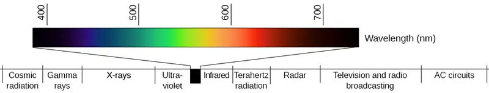
Sound Waves¶
Like light waves, the physical properties of sound waves are associated with various aspects of our perception of sound. The frequency of a sound wave is associated with our perception of that sound’s pitch. High-frequency sound waves are perceived as high-pitched sounds, while low-frequency sound waves are perceived as low-pitched sounds. The audible range of sound frequencies is between 20 and 20000 Hz, with greatest sensitivity to those frequencies that fall in the middle of this range.
As was the case with the visible spectrum, other species show differences in their audible ranges. For instance, chickens have a very limited audible range, from 125 to 2000 Hz. Mice have an audible range from 1000 to 91000 Hz, and the beluga whale’s audible range is from 1000 to 123000 Hz. Our pet dogs and cats have audible ranges of about 70–45000 Hz and 45–64000 Hz, respectively (Strain, 2003).
The loudness of a given sound is closely associated with the amplitude of the sound wave. Higher amplitudes are associated with louder sounds. Loudness is measured in terms of decibels (dB), a logarithmic unit of sound intensity. A typical conversation would correlate with 60 dB; a rock concert might check in at 120 dB (Figure 5.9). A whisper 5 feet away or rustling leaves are at the low end of our hearing range; sounds like a window air conditioner, a normal conversation, and even heavy traffic or a vacuum cleaner are within a tolerable range. However, there is the potential for hearing damage from about 80 dB to 130 dB: These are sounds of a food processor, power lawnmower, heavy truck (25 feet away), subway train (20 feet away), live rock music, and a jackhammer. About one-third of all hearing loss is due to noise exposure, and the louder the sound, the shorter the exposure needed to cause hearing damage (Le, Straatman, Lea, & Westerberg, 2017). Listening to music through earbuds at maximum volume (around 100–105 decibels) can cause noise-induced hearing loss after 15 minutes of exposure. Although listening to music at maximum volume may not seem to cause damage, it increases the risk of age-related hearing loss (Kujawa & Liberman, 2006). The threshold for pain is about 130 dB, a jet plane taking off or a revolver firing at close range (Dunkle, 1982).
![This illustration has a vertical bar in the middle labeled Decibels (dB) numbered 0 to 150 in intervals from the bottom to the top. To the left of the bar, the “sound intensity” of different sounds is labeled: “Hearing threshold” is 0; “Whisper” is 30, “soft music” is 40, “Refrigerator” is 45, “Safe” and “normal conversation” is 60, “Heavy city traffic” with “permanent damage after 8 hours of exposure” is 85, “Motorcycle” with “permanent damage after 6 hours exposure” is 95, “Earbuds max volume” with “permanent damage after 15 miutes exposure” is 105, “Risk of hearing loss” is 110, “pain threshold” is 130, “harmful” is 140, and “firearms” with “immediate permanent damage” is 150. To the right of the bar are photographs depicting “common sound”: At 20 decibels is a picture of rustling leaves; At 60 is two people talking, at 85 is traffic, at 105 is ear buds, at 120 is a music concert, and at 130 are jets.](img/cnx-psych-05-02-audrange.webp)
Although wave amplitude is generally associated with loudness, there is some interaction between frequency and amplitude in our perception of loudness within the audible range. For example, a 10 Hz sound wave is inaudible no matter the amplitude of the wave. A 1000 Hz sound wave, on the other hand, would vary dramatically in terms of perceived loudness as the amplitude of the wave increased.
Link To Learning
Watch this brief video about our perception of frequency and amplitude to learn more.
Of course, different musical instruments can play the same musical note at the same level of loudness, yet they still sound quite different. This is known as the timbre of a sound. Timbre refers to a sound’s purity, and it is affected by the complex interplay of frequency, amplitude, and timing of sound waves.
5.3 Vision¶
Learning Objectives
By the end of this section, you will be able to:
- Describe the basic anatomy of the visual system
- Discuss how rods and cones contribute to different aspects of vision
- Describe how monocular and binocular cues are used in the perception of depth
The visual system constructs a mental representation of the world around us (Figure 5.10). This contributes to our ability to successfully navigate through physical space and interact with important individuals and objects in our environments. This section will provide an overview of the basic anatomy and function of the visual system. In addition, we will explore our ability to perceive color and depth.
Anatomy of the Visual System¶
The eye is the major sensory organ involved in vision (Figure 5.11). Light waves are transmitted across the cornea and enter the eye through the pupil. The cornea is the transparent covering over the eye. It serves as a barrier between the inner eye and the outside world, and it is involved in focusing light waves that enter the eye. The pupil is the small opening in the eye through which light passes, and the size of the pupil can change as a function of light levels as well as emotional arousal. When light levels are low, the pupil will become dilated, or expanded, to allow more light to enter the eye. When light levels are high, the pupil will constrict, or become smaller, to reduce the amount of light that enters the eye. The pupil’s size is controlled by muscles that are connected to the iris, which is the colored portion of the eye.
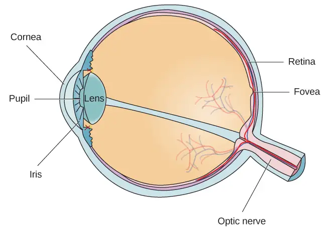
After passing through the pupil, light crosses the lens, a curved, transparent structure that serves to provide additional focus. The lens is attached to muscles that can change its shape to aid in focusing light that is reflected from near or far objects. In a normal-sighted individual, the lens will focus images perfectly on a small indentation in the back of the eye known as the fovea, which is part of the retina, the light-sensitive lining of the eye. The fovea contains densely packed specialized photoreceptor cells (Figure 5.12). These photoreceptor cells, known as cones, are light-detecting cells. The cones are specialized types of photoreceptors that work best in bright light conditions. Cones are very sensitive to acute detail and provide tremendous spatial resolution. They are also directly involved in our ability to perceive color.
While cones are concentrated in the fovea, where images tend to be focused, rods, another type of photoreceptor, are located throughout the remainder of the retina. Rods are specialized photoreceptors that work well in low light conditions, and while they lack the spatial resolution and color function of the cones, they are involved in our vision in dimly lit environments as well as in our perception of movement on the periphery of our visual field.
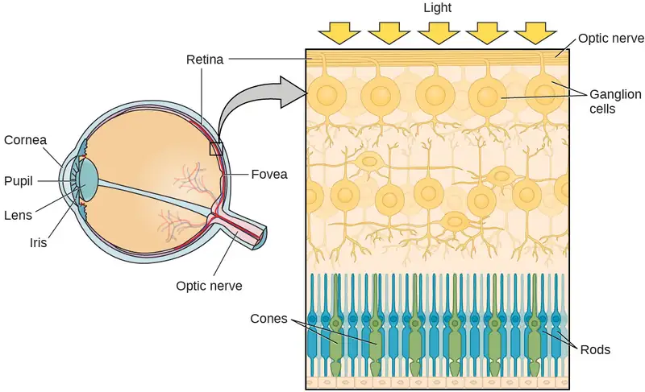
Most of us have experienced the different sensitivities of rods and cones when making the transition from a brightly lit environment to a dimly lit environment. Imagine going to see a blockbuster movie on a clear summer day. As you walk from the brightly lit lobby into the dark theater, you notice that you immediately have difficulty seeing much of anything. After a few minutes, you begin to adjust to the darkness and can see the interior of the theater. In the bright environment, your vision was dominated primarily by cone activity. As you move to the dark environment, rod activity dominates, but there is a delay in transitioning between the phases. If your rods do not transform light into nerve impulses as easily and efficiently as they should, you will have difficulty seeing in dim light, a condition known as night blindness.
Rods and cones are connected (via several interneurons) to retinal ganglion cells. Axons from the retinal ganglion cells converge and exit through the back of the eye to form the optic nerve. The optic nerve carries visual information from the retina to the brain. There is a point in the visual field called the blind spot: Even when light from a small object is focused on the blind spot, we do not see it. We are not consciously aware of our blind spots for two reasons: First, each eye gets a slightly different view of the visual field; therefore, the blind spots do not overlap. Second, our visual system fills in the blind spot so that although we cannot respond to visual information that occurs in that portion of the visual field, we are also not aware that information is missing.
The optic nerve from each eye merges just below the brain at a point called the optic chiasm. As Figure 5.13 shows, the optic chiasm is an X-shaped structure that sits just below the cerebral cortex at the front of the brain. At the point of the optic chiasm, information from the right visual field (which comes from both eyes) is sent to the left side of the brain, and information from the left visual field is sent to the right side of the brain.
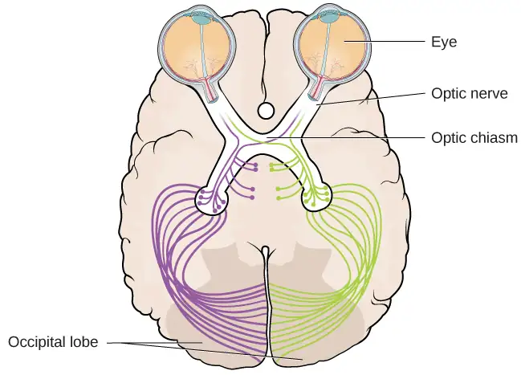
Once inside the brain, visual information is sent via a number of structures to the occipital lobe at the back of the brain for processing. Visual information might be processed in parallel pathways which can generally be described as the “what pathway” and the “where/how” pathway. The “what pathway” is involved in object recognition and identification, while the “where/how pathway” is involved with location in space and how one might interact with a particular visual stimulus (Milner & Goodale, 2008; Ungerleider & Haxby, 1994). For example, when you see a ball rolling down the street, the “what pathway” identifies what the object is, and the “where/how pathway” identifies its location or movement in space.
What Do You Think?: The Ethics of Research Using Animals
David Hubel and Torsten Wiesel were awarded the Nobel Prize in Medicine in 1981 for their research on the visual system. They collaborated for more than twenty years and made significant discoveries about the neurology of visual perception (Hubel & Wiesel, 1959, 1962, 1963, 1970; Wiesel & Hubel, 1963). They studied animals, mostly cats and monkeys. Although they used several techniques, they did considerable single unit recordings, during which tiny electrodes were inserted in the animal’s brain to determine when a single cell was activated. Among their many discoveries, they found that specific brain cells respond to lines with specific orientations (called ocular dominance), and they mapped the way those cells are arranged in areas of the visual cortex known as columns and hypercolumns.
In some of their research, they sutured one eye of newborn kittens closed and followed the development of the kittens' vision. They discovered there was a critical period of development for vision. If kittens were deprived of input from one eye, other areas of their visual cortex filled in the area that was normally used by the eye that was sewn closed. In other words, neural connections that exist at birth can be lost if they are deprived of sensory input.
What do you think about sewing a kitten's eye closed for research? To many animal advocates, this would seem brutal, abusive, and unethical. What if you could do research that would help ensure babies and children born with certain conditions could develop full vision instead of becoming blind? Would you want that research done? Would you conduct that research, even if it meant causing some harm to cats? Would you think the same way if you were the parent of such a child? What if you worked at the animal shelter?
Like virtually every other industrialized nation, the United States permits medical experimentation on animals, with few limitations (assuming sufficient scientific justification). The goal of any laws that exist is not to ban such tests but rather to limit unnecessary animal suffering by establishing standards for the humane treatment and housing of animals in laboratories.
As explained by Stephen Latham, the director of the Interdisciplinary Center for Bioethics at Yale (2012), possible legal and regulatory approaches to animal testing vary on a continuum from strong government regulation and monitoring of all experimentation at one end, to a self-regulated approach that depends on the ethics of the researchers at the other end. The United Kingdom has the most significant regulatory scheme, whereas Japan uses the self-regulation approach. The U.S. approach is somewhere in the middle, the result of a gradual blending of the two approaches.
There is no question that medical research is a valuable and important practice. The question is whether the use of animals is a necessary or even best practice for producing the most reliable results. Alternatives include the use of patient-drug databases, virtual drug trials, computer models and simulations, and noninvasive imaging techniques such as magnetic resonance imaging and computed tomography scans (“Animals in Science/Alternatives,” n.d.). Other techniques, such as microdosing, use humans not as test animals but as a means to improve the accuracy and reliability of test results. In vitro methods based on human cell and tissue cultures, stem cells, and genetic testing methods are also increasingly available.
Today, at the local level, any facility that uses animals and receives federal funding must have an Institutional Animal Care and Use Committee (IACUC) that ensures that the NIH guidelines are being followed. The IACUC must include researchers, administrators, a veterinarian, and at least one person with no ties to the institution: that is, a concerned citizen. This committee also performs inspections of laboratories and protocols.
Color and Depth Perception¶
We do not see the world in black and white; neither do we see it as two-dimensional (2-D) or flat (just height and width, no depth). Let’s look at how color vision works and how we perceive three dimensions (height, width, and depth).
Color Vision¶
Normal-sighted individuals have three different types of cones that mediate color vision. Each of these cone types is maximally sensitive to a slightly different wavelength of light. According to the trichromatic theory of color vision, shown in Figure 5.14, all colors in the spectrum can be produced by combining red, green, and blue. The three types of cones are each receptive to one of the colors.
![A graph is shown with “sensitivity” plotted on the y-axis and “Wavelength” in nanometers plotted along the x-axis with measurements of 400, 500, 600, and 700. Three lines in different colors move from the base to the peak of the y axis, and back to the base. The blue line begins at 400 nm and hits its peak of sensitivity around 455 nanometers, before the sensitivity drops off at roughly the same rate at which it increased, returning to the lowest sensitivity around 530 nm . The green line begins at 400 nm and reaches its peak of sensitivity around 535 nanometers. Its sensitivity then decreases at roughly the same rate at which it increased, returning to the lowest sensitivity around 650 nm. The red line follows the same pattern as the first two, beginning at 400 nm, increasing and decreasing at the same rate, and it hits its height of sensitivity around 580 nanometers. Below this graph is a horizontal bar showing the colors of the visible spectrum.](img/cnx-psych-05-03-trichrom.webp)
Connect the Concepts: Colorblindness: A Personal Story
Several years ago, I dressed to go to a public function and walked into the kitchen where my 7-year-old daughter sat. She looked up at me, and in her most stern voice, said, “You can’t wear that.” I asked, "Why not?" and she informed me the colors of my clothes did not match. She had complained frequently that I was bad at matching my shirts, pants, and ties, but this time, she sounded especially alarmed. As a single father with no one else to ask at home, I drove us to the nearest convenience store and asked the store clerk if my clothes matched. She said my pants were a bright green color, my shirt was a reddish orange, and my tie was brown. She looked at my quizzically and said, "No way do your clothes match." Over the next few days, I started asking my coworkers and friends if my clothes matched. After several days of being told that my coworkers just thought I had "a really unique style," I made an appointment with an eye doctor and was tested (Figure 5.15). It was then that I found out that I was colorblind. I cannot differentiate between most greens, browns, and reds. Fortunately, other than unknowingly being badly dressed, my colorblindness rarely harms my day-to-day life.
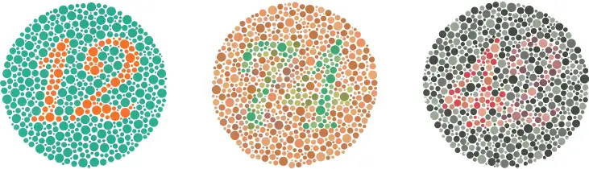
Some forms of color deficiency are rare. Seeing in grayscale (only shades of black and white) is extremely rare, and people who do so only have rods, which means they have very low visual acuity and cannot see very well. The most common X-linked inherited abnormality is red-green color blindness (Birch, 2012). Approximately 8% of males with White European descent, 5% of Asian males, 4% of African males, and less than 2% of Indigenous American males, Australian males, and Polynesian males have red-green color deficiency (Birch, 2012). Comparatively, only about 0.4% in females from White European descent have red-green color deficiency (Birch, 2012).
The trichromatic theory of color vision is not the only theory—another major theory of color vision is known as the opponent-process theory. According to this theory, color is coded in opponent pairs: black-white, yellow-blue, and green-red. The basic idea is that some cells of the visual system are excited by one of the opponent colors and inhibited by the other. So, a cell that was excited by wavelengths associated with green would be inhibited by wavelengths associated with red, and vice versa. One of the implications of opponent processing is that we do not experience greenish-reds or yellowish-blues as colors. Another implication is that this leads to the experience of negative afterimages. An afterimage describes the continuation of a visual sensation after removal of the stimulus. For example, when you stare briefly at the sun and then look away from it, you may still perceive a spot of light although the stimulus (the sun) has been removed. When color is involved in the stimulus, the color pairings identified in the opponent-process theory lead to a negative afterimage. You can test this concept using the flag in Figure 5.16.
But these two theories—the trichromatic theory of color vision and the opponent-process theory—are not mutually exclusive. Research has shown that they just apply to different levels of the nervous system. For visual processing on the retina, trichromatic theory applies: the cones are responsive to three different wavelengths that represent red, blue, and green. But once the signal moves past the retina on its way to the brain, the cells respond in a way consistent with opponent-process theory (Land, 1959; Kaiser, 1997).
Link To Learning
Watch this video about color perception to learn more.
Depth Perception¶
Our ability to perceive spatial relationships in three-dimensional (3-D) space is known as depth perception. With depth perception, we can describe things as being in front, behind, above, below, or to the side of other things.
Our world is three-dimensional, so it makes sense that our mental representation of the world has three-dimensional properties. We use a variety of cues in a visual scene to establish our sense of depth. Some of these are binocular cues, which means that they rely on the use of both eyes. One example of a binocular depth cue is binocular disparity, the slightly different view of the world that each of our eyes receives. To experience this slightly different view, do this simple exercise: extend your arm fully and extend one of your fingers and focus on that finger. Now, close your left eye without moving your head, then open your left eye and close your right eye without moving your head. You will notice that your finger seems to shift as you alternate between the two eyes because of the slightly different view each eye has of your finger.
A 3-D movie works on the same principle: the special glasses you wear allow the two slightly different images projected onto the screen to be seen separately by your left and your right eye. As your brain processes these images, you have the illusion that the leaping animal or running person is coming right toward you.
Although we rely on binocular cues to experience depth in our 3-D world, we can also perceive depth in 2-D arrays. Think about all the paintings and photographs you have seen. Generally, you pick up on depth in these images even though the visual stimulus is 2-D. When we do this, we are relying on a number of monocular cues, or cues that require only one eye. If you think you can’t see depth with one eye, note that you don’t bump into things when using only one eye while walking—and, in fact, we have more monocular cues than binocular cues.
An example of a monocular cue would be what is known as linear perspective. Linear perspective refers to the fact that we perceive depth when we see two parallel lines that seem to converge in an image (Figure 5.17). Some other monocular depth cues are interposition, the partial overlap of objects, and the relative size and closeness of images to the horizon.
Dig Deeper: Stereoblindness
Bruce Bridgeman was born with an extreme case of lazy eye that resulted in him being stereoblind, or unable to respond to binocular cues of depth. He relied heavily on monocular depth cues, but he never had a true appreciation of the 3-D nature of the world around him. This all changed one night in 2012 while Bruce was seeing a movie with his wife.
The movie the couple was going to see was shot in 3-D, and even though he thought it was a waste of money, Bruce paid for the 3-D glasses when he purchased his ticket. As soon as the film began, Bruce put on the glasses and experienced something completely new. For the first time in his life he appreciated the true depth of the world around him. Remarkably, his ability to perceive depth persisted outside of the movie theater.
There are cells in the nervous system that respond to binocular depth cues. Normally, these cells require activation during early development in order to persist, so experts familiar with Bruce’s case (and others like his) assume that at some point in his development, Bruce must have experienced at least a fleeting moment of binocular vision. It was enough to ensure the survival of the cells in the visual system tuned to binocular cues. The mystery now is why it took Bruce nearly 70 years to have these cells activated (Peck, 2012).
Summary¶
Light waves cross the cornea and enter the eye at the pupil. The eye’s lens focuses this light so that the image is focused on a region of the retina known as the fovea. The fovea contains cones that possess high levels of visual acuity and operate best in bright light conditions. Rods are located throughout the retina and operate best under dim light conditions. Visual information leaves the eye via the optic nerve. Information from each visual field is sent to the opposite side of the brain at the optic chiasm. Visual information then moves through a number of brain sites before reaching the occipital lobe, where it is processed.
Two theories explain color perception. The trichromatic theory asserts that three distinct cone groups are tuned to slightly different wavelengths of light, and it is the combination of activity across these cone types that results in our perception of all the colors we see. The opponent-process theory of color vision asserts that color is processed in opponent pairs and accounts for the interesting phenomenon of a negative afterimage. We perceive depth through a combination of monocular and binocular depth cues.
5.4 Hearing¶
Learning Objectives
By the end of this section, you will be able to:
- Describe the basic anatomy and function of the auditory system
- Explain how we encode and perceive pitch
- Discuss how we localize sound
Our auditory system converts pressure waves into meaningful sounds. This translates into our ability to hear the sounds of nature, to appreciate the beauty of music, and to communicate with one another through spoken language. This section will provide an overview of the basic anatomy and function of the auditory system. It will include a discussion of how the sensory stimulus is translated into neural impulses, where in the brain that information is processed, how we perceive pitch, and how we know where sound is coming from.
Anatomy of the Auditory System¶
The ear can be separated into multiple sections. The outer ear includes the pinna, which is the visible part of the ear that protrudes from our heads, the auditory canal, and the tympanic membrane, or eardrum. The middle ear contains three tiny bones known as the ossicles, which are named the malleus (or hammer), incus (or anvil), and the stapes (or stirrup). The inner ear contains the semi-circular canals, which are involved in balance and movement (the vestibular sense), and the cochlea. The cochlea is a fluid-filled, snail-shaped structure that contains the sensory receptor cells (hair cells) of the auditory system (Figure 5.18).
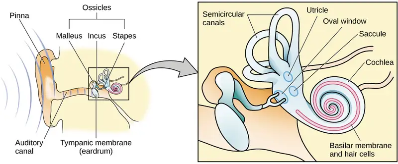
Sound waves travel along the auditory canal and strike the tympanic membrane, causing it to vibrate. This vibration results in movement of the three ossicles. As the ossicles move, the stapes presses into a thin membrane of the cochlea known as the oval window. As the stapes presses into the oval window, the fluid inside the cochlea begins to move, which in turn stimulates hair cells, which are auditory receptor cells of the inner ear embedded in the basilar membrane. The basilar membrane is a thin strip of tissue within the cochlea.
The activation of hair cells is a mechanical process: the stimulation of the hair cell ultimately leads to activation of the cell. As hair cells become activated, they generate neural impulses that travel along the auditory nerve to the brain. Auditory information is shuttled to the inferior colliculus, the medial geniculate nucleus of the thalamus, and finally to the auditory cortex in the temporal lobe of the brain for processing. Like the visual system, there is also evidence suggesting that information about auditory recognition and localization is processed in parallel streams (Rauschecker & Tian, 2000; Renier et al., 2009).
Pitch Perception¶
Different frequencies of sound waves are associated with differences in our perception of the pitch of those sounds. Low-frequency sounds are lower pitched, and high-frequency sounds are higher pitched. How does the auditory system differentiate among various pitches?
Several theories have been proposed to account for pitch perception. We’ll discuss two of them here: temporal theory and place theory. The temporal theory of pitch perception asserts that frequency is coded by the activity level of a sensory neuron. This would mean that a given hair cell would fire action potentials related to the frequency of the sound wave. While this is a very intuitive explanation, we detect such a broad range of frequencies (20–20,000 Hz) that the frequency of action potentials fired by hair cells cannot account for the entire range. Because of properties related to sodium channels on the neuronal membrane that are involved in action potentials, there is a point at which a cell cannot fire any faster (Shamma, 2001).
The place theory of pitch perception suggests that different portions of the basilar membrane are sensitive to sounds of different frequencies. More specifically, the base of the basilar membrane responds best to high frequencies and the tip of the basilar membrane responds best to low frequencies. Therefore, hair cells that are in the base portion would be labeled as high-pitch receptors, while those in the tip of basilar membrane would be labeled as low-pitch receptors (Shamma, 2001).
In reality, both theories explain different aspects of pitch perception. At frequencies up to about 4000 Hz, it is clear that both the rate of action potentials and place contribute to our perception of pitch. However, much higher frequency sounds can only be encoded using place cues (Shamma, 2001).
Sound Localization¶
The ability to locate sound in our environments is an important part of hearing. Localizing sound could be considered similar to the way that we perceive depth in our visual fields. Like the monocular and binocular cues that provided information about depth, the auditory system uses both monaural (one-eared) and binaural (two-eared) cues to localize sound.
Each pinna interacts with incoming sound waves differently, depending on the sound’s source relative to our bodies. This interaction provides a monaural cue that is helpful in locating sounds that occur above or below and in front or behind us. The sound waves received by your two ears from sounds that come from directly above, below, in front, or behind you would be identical; therefore, monaural cues are essential (Grothe, Pecka, & McAlpine, 2010).
Binaural cues, on the other hand, provide information on the location of a sound along a horizontal axis by relying on differences in patterns of vibration of the eardrum between our two ears. If a sound comes from an off-center location, it creates two types of binaural cues: interaural level differences and interaural timing differences. Interaural level difference refers to the fact that a sound coming from the right side of your body is more intense at your right ear than at your left ear because of the attenuation of the sound wave as it passes through your head. Interaural timing difference refers to the small difference in the time at which a given sound wave arrives at each ear (Figure 5.19). Certain brain areas monitor these differences to construct where along a horizontal axis a sound originates (Grothe et al., 2010).
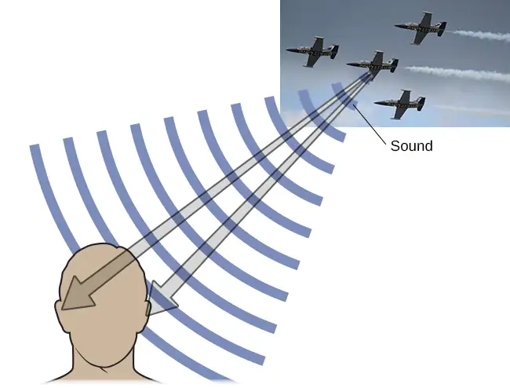
Hearing Loss¶
Deafness is the partial or complete inability to hear. Some people are born without hearing, which is known as congenital deafness. Other people suffer from conductive hearing loss, which is due to a problem delivering sound energy to the cochlea. Causes for conductive hearing loss include blockage of the ear canal, a hole in the tympanic membrane, problems with the ossicles, or fluid in the space between the eardrum and cochlea. Another group of people suffer from sensorineural hearing loss, which is the most common form of hearing loss. Sensorineural hearing loss can be caused by many factors, such as aging, head or acoustic trauma, infections and diseases (such as measles or mumps), medications, environmental effects such as noise exposure (noise-induced hearing loss, as shown in Figure 5.20), tumors, and toxins (such as those found in certain solvents and metals).
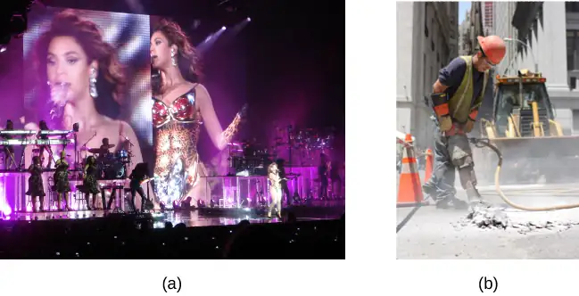
Given the mechanical nature by which the sound wave stimulus is transmitted from the eardrum through the ossicles to the oval window of the cochlea, some degree of hearing loss is inevitable. With conductive hearing loss, hearing problems are associated with a failure in the vibration of the eardrum and/or movement of the ossicles. These problems are often dealt with through devices like hearing aids that amplify incoming sound waves to make vibration of the eardrum and movement of the ossicles more likely to occur.
When the hearing problem is associated with a failure to transmit neural signals from the cochlea to the brain, it is called sensorineural hearing loss. One disease that results in sensorineural hearing loss is Ménière's disease. Although not well understood, Ménière's disease results in a degeneration of inner ear structures that can lead to hearing loss, tinnitus (constant ringing or buzzing), vertigo (a sense of spinning), and an increase in pressure within the inner ear (Semaan & Megerian, 2011). This kind of loss cannot be treated with hearing aids, but some individuals might be candidates for a cochlear implant as a treatment option. Cochlear implants are electronic devices that consist of a microphone, a speech processor, and an electrode array. The device receives incoming sound information and directly stimulates the auditory nerve to transmit information to the brain.
Link To Learning
Watch this video about cochlear implant surgeries to learn more.
What Do You Think?: Deaf Culture
In the United States and other places around the world, deaf people have their own language, schools, and customs. This is called deaf culture. In the United States, deaf individuals often communicate using American Sign Language (ASL); ASL has no verbal component and is based entirely on visual signs and gestures. The primary mode of communication is signing. One of the values of deaf culture is to continue traditions like using sign language rather than teaching deaf children to try to speak, read lips, or have cochlear implant surgery.
When a child is diagnosed as deaf, parents have difficult decisions to make. Should the child be enrolled in mainstream schools and taught to verbalize and read lips? Or should the child be sent to a school for deaf children to learn ASL and have significant exposure to deaf culture? Do you think there might be differences in the way that parents approach these decisions depending on whether or not they are also deaf?
5.5 The Other Senses¶
Learning Objectives
By the end of this section, you will be able to:
- Describe the basic functions of the chemical senses
- Explain the basic functions of the somatosensory, nociceptive, and thermoceptive sensory systems
- Describe the basic functions of the vestibular, proprioceptive, and kinesthetic sensory systems
Vision and hearing have received an incredible amount of attention from researchers over the years. While there is still much to be learned about how these sensory systems work, we have a much better understanding of them than of our other sensory modalities. In this section, we will explore our chemical senses (taste and smell) and our body senses (touch, temperature, pain, balance, and body position).
The Chemical Senses¶
Taste (gustation) and smell (olfaction) are called chemical senses because both have sensory receptors that respond to molecules in the food we eat or in the air we breathe. There is a pronounced interaction between our chemical senses. For example, when we describe the flavor of a given food, we are really referring to both gustatory and olfactory properties of the food working in combination.
Taste (Gustation)¶
You have learned since elementary school that there are four basic groupings of taste: sweet, salty, sour, and bitter. Research demonstrates, however, that we have at least six taste groupings. Umami is our fifth taste. Umami is actually a Japanese word that roughly translates to yummy, and it is associated with a taste for monosodium glutamate (Kinnamon & Vandenbeuch, 2009). There is also a growing body of experimental evidence suggesting that we possess a taste for the fatty content of a given food (Mizushige, Inoue, & Fushiki, 2007).
Molecules from the food and beverages we consume dissolve in our saliva and interact with taste receptors on our tongue and in our mouth and throat. Taste buds are formed by groupings of taste receptor cells with hair-like extensions that protrude into the central pore of the taste bud (Figure 5.21). Taste buds have a life cycle of ten days to two weeks, so even destroying some by burning your tongue won’t have any long-term effect; they just grow right back. Taste molecules bind to receptors on this extension and cause chemical changes within the sensory cell that result in neural impulses being transmitted to the brain via different nerves, depending on where the receptor is located. Taste information is transmitted to the medulla, thalamus, and limbic system, and to the gustatory cortex, which is tucked underneath the overlap between the frontal and temporal lobes (Maffei, Haley, & Fontanini, 2012; Roper, 2013).
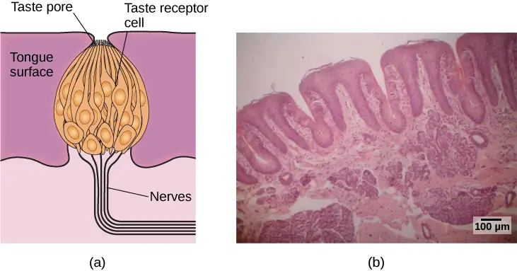
Smell (Olfaction)¶
Olfactory receptor cells are located in a mucous membrane at the top of the nose. Small hair-like extensions from these receptors serve as the sites for odor molecules dissolved in the mucus to interact with chemical receptors located on these extensions (Figure 5.22). Once an odor molecule has bound a given receptor, chemical changes within the cell result in signals being sent to the olfactory bulb: a bulb-like structure at the tip of the frontal lobe where the olfactory nerves begin. From the olfactory bulb, information is sent to regions of the limbic system and to the primary olfactory cortex, which is located very near the gustatory cortex (Lodovichi & Belluscio, 2012; Spors et al., 2013).
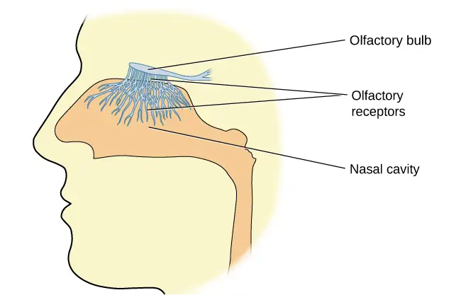
There is tremendous variation in the sensitivity of the olfactory systems of different species. We often think of dogs as having far superior olfactory systems than our own, and indeed, dogs can do some remarkable things with their noses. There is some evidence to suggest that dogs can “smell” dangerous drops in blood glucose levels as well as cancerous tumors (Wells, 2010). Dogs’ extraordinary olfactory abilities may be due to the increased number of functional genes for olfactory receptors (between 800 and 1200), compared to the fewer than 400 observed in humans and other primates (Niimura & Nei, 2007).
Many species respond to chemical messages, known as pheromones, sent by another individual (Wysocki & Preti, 2004). Pheromonal communication often involves providing information about the reproductive status of a potential mate. So, for example, when a female rat is ready to mate, it secretes pheromonal signals that draw attention from nearby male rats. Pheromonal activation is actually an important component in eliciting sexual behavior in the male rat (Furlow, 1996, 2012; Purvis & Haynes, 1972; Sachs, 1997). There has also been a good deal of research (and controversy) about pheromones in humans (Comfort, 1971; Russell, 1976; Wolfgang-Kimball, 1992; Weller, 1998).
Touch, Thermoception, and Nociception¶
A number of receptors are distributed throughout the skin to respond to various touch-related stimuli (Figure 5.23). These receptors include Meissner’s corpuscles, Pacinian corpuscles, Merkel’s disks, and Ruffini corpuscles. Meissner’s corpuscles respond to pressure and lower frequency vibrations, and Pacinian corpuscles detect transient pressure and higher frequency vibrations. Merkel’s disks respond to light pressure, while Ruffini corpuscles detect stretch (Abraira & Ginty, 2013).
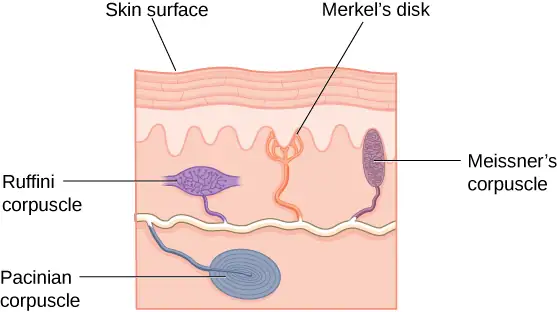
In addition to the receptors located in the skin, there are also a number of free nerve endings that serve sensory functions. These nerve endings respond to a variety of different types of touch-related stimuli and serve as sensory receptors for both thermoception (temperature perception) and nociception (a signal indicating potential harm and maybe pain) (Garland, 2012; Petho & Reeh, 2012; Spray, 1986). Sensory information collected from the receptors and free nerve endings travels up the spinal cord and is transmitted to regions of the medulla, thalamus, and ultimately to the somatosensory cortex, which is located in the postcentral gyrus of the parietal lobe.
Pain Perception¶
Pain is an unpleasant experience that involves both physical and psychological components. Feeling pain is quite adaptive because it makes us aware of an injury, and it motivates us to remove ourselves from the cause of that injury. In addition, pain also makes us less likely to suffer additional injury because we will be gentler with our injured body parts.
Generally speaking, pain can be considered to be neuropathic or inflammatory in nature. Pain that signals some type of tissue damage is known as inflammatory pain. In some situations, pain results from damage to neurons of either the peripheral or central nervous system. As a result, pain signals that are sent to the brain get exaggerated. This type of pain is known as neuropathic pain. Multiple treatment options for pain relief range from relaxation therapy to the use of analgesic medications to deep brain stimulation. The most effective treatment option for a given individual will depend on a number of considerations, including the severity and persistence of the pain and any medical/psychological conditions.
Some individuals are born without the ability to feel pain. This very rare genetic disorder is known as congenital insensitivity to pain (or congenital analgesia). While those with congenital analgesia can detect differences in temperature and pressure, they cannot experience pain. As a result, they often suffer significant injuries. Young children have serious mouth and tongue injuries because they have bitten themselves repeatedly. Not surprisingly, individuals suffering from this disorder have much shorter life expectancies due to their injuries and secondary infections of injured sites (U.S. National Library of Medicine, 2013).
Link To Learning
Watch this video about congenital insensitivity to pain to learn more.
The Vestibular Sense, Proprioception, and Kinesthesia¶
The vestibular sense contributes to our ability to maintain balance and body posture. As Figure 5.24 shows, the major sensory organs (utricle, saccule, and the three semicircular canals) of this system are located next to the cochlea in the inner ear. The vestibular organs are fluid-filled and have hair cells, similar to the ones found in the auditory system, which respond to movement of the head and gravitational forces. When these hair cells are stimulated, they send signals to the brain via the vestibular nerve. Although we may not be consciously aware of our vestibular system’s sensory information under normal circumstances, its importance is apparent when we experience motion sickness and/or dizziness related to infections of the inner ear (Khan & Chang, 2013).
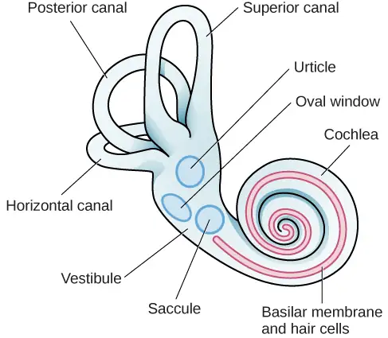
In addition to maintaining balance, the vestibular system collects information critical for controlling movement and the reflexes that move various parts of our bodies to compensate for changes in body position. Therefore, both proprioception (perception of body position) and kinesthesia (perception of the body’s movement through space) interact with information provided by the vestibular system.
These sensory systems also gather information from receptors that respond to stretch and tension in muscles, joints, skin, and tendons (Lackner & DiZio, 2005; Proske, 2006; Proske & Gandevia, 2012). Proprioceptive and kinesthetic information travels to the brain via the spinal column. Several cortical regions in addition to the cerebellum receive information from and send information to the sensory organs of the proprioceptive and kinesthetic systems.
5.6 Gestalt Principles of Perception¶
Learning Objectives
By the end of this section, you will be able to:
- Explain the figure-ground relationship
- Define Gestalt principles of grouping
- Describe how perceptual set is influenced by an individual’s characteristics and mental state
In the early part of the 20th century, Max Wertheimer published a paper demonstrating that individuals perceived motion in rapidly flickering static images—an insight that came to him as he used a child’s toy tachistoscope. Wertheimer, and his assistants Wolfgang Köhler and Kurt Koffka, who later became his partners, believed that perception involved more than simply combining sensory stimuli. This belief led to a new movement within the field of psychology known as Gestalt psychology. The word gestalt literally means form or pattern, but its use reflects the idea that the whole is different from the sum of its parts. In other words, the brain creates a perception that is more than simply the sum of available sensory inputs, and it does so in predictable ways. Gestalt psychologists translated these predictable ways into principles by which we organize sensory information. As a result, Gestalt psychology has been extremely influential in the area of sensation and perception (Rock & Palmer, 1990).
One Gestalt principle is the figure-ground relationship. According to this principle, we tend to segment our visual world into figure and ground. Figure is the object or person that is the focus of the visual field, while the ground is the background. As Figure 5.25 shows, our perception can vary tremendously, depending on what is perceived as figure and what is perceived as ground. Presumably, our ability to interpret sensory information depends on what we label as figure and what we label as ground in any particular case, although this assumption has been called into question (Peterson & Gibson, 1994; Vecera & O’Reilly, 1998).
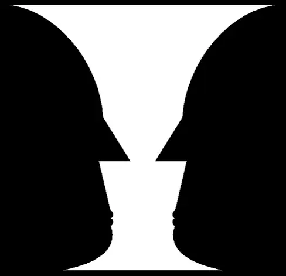
Another Gestalt principle for organizing sensory stimuli into meaningful perception is proximity. This principle asserts that things that are close to one another tend to be grouped together, as Figure 5.26 illustrates.
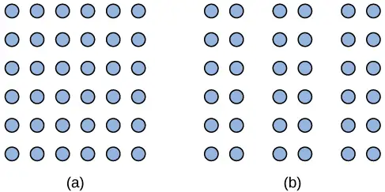
How we read something provides another illustration of the proximity concept. For example, we read this sentence like this, notl iket hiso rt hat. We group the letters of a given word together because there are no spaces between the letters, and we perceive words because there are spaces between each word. Here are some more examples: Cany oum akes enseo ft hiss entence? What doth es e wor dsmea n?
We might also use the principle of similarity to group things in our visual fields. According to this principle, things that are alike tend to be grouped together (Figure 5.27). For example, when watching a football game, we tend to group individuals based on the colors of their uniforms. When watching an offensive drive, we can get a sense of the two teams simply by grouping along this dimension.
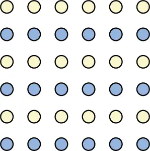
Two additional Gestalt principles are the law of continuity (or good continuation) and closure. The law of continuity suggests that we are more likely to perceive continuous, smooth flowing lines rather than jagged, broken lines (Figure 5.28). The principle of closure states that we organize our perceptions into complete objects rather than as a series of parts (Figure 5.29).
Link To Learning
Watch this video showing real world examples of Gestalt principles to learn more.
According to Gestalt theorists, pattern perception, or our ability to discriminate among different figures and shapes, occurs by following the principles described above. You probably feel fairly certain that your perception accurately matches the real world, but this is not always the case. Our perceptions are based on perceptual hypotheses: educated guesses that we make while interpreting sensory information. These hypotheses are informed by a number of factors, including our personalities, experiences, and expectations. We use these hypotheses to generate our perceptual set. For instance, research has demonstrated that those who are given verbal priming produce a biased interpretation of complex ambiguous figures (Goolkasian & Woodberry, 2010).
Dig Deeper: The Depths of Perception: Bias, Prejudice, and Cultural Factors
In this chapter, you have learned that perception is a complex process. Built from sensations, but influenced by our own experiences, biases, prejudices, and cultures, perceptions can be very different from person to person. Research suggests that implicit racial prejudice and stereotypes affect perception. For instance, several studies have demonstrated that non-Black participants identify weapons faster and are more likely to identify non-weapons as weapons when the image of the weapon is paired with the image of a Black person (Payne, 2001; Payne, Shimizu, & Jacoby, 2005). Furthermore, White individuals’ decisions to shoot an armed target in a video game is made more quickly when the target is Black (Correll, Park, Judd, & Wittenbrink, 2002; Correll, Urland, & Ito, 2006). This research is important, considering the number of very high-profile cases in the last few decades in which Black people were killed by people who claimed to believe that the unarmed individuals were armed and/or represented some threat to their personal safety.
Chapter Review¶
Key Terms¶
- absolute threshold
- minimum amount of stimulus energy that must be present for the stimulus to be detected 50% of the time
- afterimage
- continuation of a visual sensation after removal of the stimulus
- amplitude
- height of a wave
- basilar membrane
- thin strip of tissue within the cochlea that contains the hair cells which serve as the sensory receptors for the auditory system
- binaural cue
- two-eared cue to localize sound
- binocular cue
- cue that relies on the use of both eyes
- binocular disparity
- slightly different view of the world that each eye receives
- blind spot
- point where we cannot respond to visual information in that portion of the visual field
- bottom-up processing
- system in which perceptions are built from sensory input
- closure
- organizing our perceptions into complete objects rather than as a series of parts
- cochlea
- fluid-filled, snail-shaped structure that contains the sensory receptor cells of the auditory system
- cochlear implant
- electronic device that consists of a microphone, a speech processor, and an electrode array to directly stimulate the auditory nerve to transmit information to the brain
- conductive hearing loss
- failure in the vibration of the eardrum and/or movement of the ossicles
- cone
- specialized photoreceptor that works best in bright light conditions and detects color
- congenital deafness
- deafness from birth
- congenital insensitivity to pain (congenital analgesia)
- genetic disorder that results in the inability to experience pain
- cornea
- transparent covering over the eye
- deafness
- partial or complete inability to hear
- decibel (dB)
- logarithmic unit of sound intensity
- depth perception
- ability to perceive depth
- electromagnetic spectrum
- all the electromagnetic radiation that occurs in our environment
- figure-ground relationship
- segmenting our visual world into figure and ground
- fovea
- small indentation in the retina that contains cones
- frequency
- number of waves that pass a given point in a given time period
- Gestalt psychology
- field of psychology based on the idea that the whole is different from the sum of its parts
- good continuation
- (also, continuity) we are more likely to perceive continuous, smooth flowing lines rather than jagged, broken lines
- hair cell
- auditory receptor cell of the inner ear
- hertz (Hz)
- cycles per second; measure of frequency
- inattentional blindness
- failure to notice something that is completely visible because of a lack of attention
- incus
- middle ear ossicle; also known as the anvil
- inflammatory pain
- signal that some type of tissue damage has occurred
- interaural level difference
- sound coming from one side of the body is more intense at the closest ear because of the attenuation of the sound wave as it passes through the head
- interaural timing difference
- small difference in the time at which a given sound wave arrives at each ear
- iris
- colored portion of the eye
- just noticeable difference
- difference in stimuli required to detect a difference between the stimuli
- kinesthesia
- perception of the body’s movement through space
- lens
- curved, transparent structure that provides additional focus for light entering the eye
- linear perspective
- perceive depth in an image when two parallel lines seem to converge
- malleus
- middle ear ossicle; also known as the hammer
- Meissner’s corpuscle
- touch receptor that responds to pressure and lower frequency vibrations
- Merkel’s disk
- touch receptor that responds to light touch
- monaural cue
- one-eared cue to localize sound
- monocular cue
- cue that requires only one eye
- Ménière's disease
- results in a degeneration of inner ear structures that can lead to hearing loss, tinnitus, vertigo, and an increase in pressure within the inner ear
- neuropathic pain
- pain from damage to neurons of either the peripheral or central nervous system
- nociception
- sensory signal indicating potential harm and maybe pain
- olfactory bulb
- bulb-like structure at the tip of the frontal lobe, where the olfactory nerves begin
- olfactory receptor
- sensory cell for the olfactory system
- opponent-process theory of color perception
- color is coded in opponent pairs: black-white, yellow-blue, and red-green
- optic chiasm
- X-shaped structure that sits just below the brain’s ventral surface; represents the merging of the optic nerves from the two eyes and the separation of information from the two sides of the visual field to the opposite side of the brain
- optic nerve
- carries visual information from the retina to the brain
- ossicles
- three tiny bones in the middle ear consisting of the malleus, incus, and stapes
- Pacinian corpuscle
- touch receptor that detects transient pressure and higher frequency vibrations
- pattern perception
- ability to discriminate among different figures and shapes
- peak
- (also, crest) highest point of a wave
- perception
- way that sensory information is interpreted and consciously experienced
- perceptual hypothesis
- educated guess used to interpret sensory information
- pheromone
- chemical message sent by another individual
- photoreceptor
- light-detecting cell
- pinna
- visible part of the ear that protrudes from the head
- pitch
- perception of a sound’s frequency
- place theory of pitch perception
- different portions of the basilar membrane are sensitive to sounds of different frequencies
- principle of closure
- organize perceptions into complete objects rather than as a series of parts
- proprioception
- perception of body position
- proximity
- things that are close to one another tend to be grouped together
- pupil
- small opening in the eye through which light passes
- retina
- light-sensitive lining of the eye
- rod
- specialized photoreceptor that works well in low light conditions
- Ruffini corpuscle
- touch receptor that detects stretch
- sensation
- what happens when sensory information is detected by a sensory receptor
- sensorineural hearing loss
- failure to transmit neural signals from the cochlea to the brain
- sensory adaptation
- not perceiving stimuli that remain relatively constant over prolonged periods of time
- signal detection theory
- change in stimulus detection as a function of current mental state
- similarity
- things that are alike tend to be grouped together
- stapes
- middle ear ossicle; also known as the stirrup
- subliminal message
- message presented below the threshold of conscious awareness
- taste bud
- grouping of taste receptor cells with hair-like extensions that protrude into the central pore of the taste bud
- temporal theory of pitch perception
- sound’s frequency is coded by the activity level of a sensory neuron
- thermoception
- temperature perception
- timbre
- descriptive term which refers to a sound’s quality; impacted by the interplay of frequency, amplitude, and timing of sound waves
- top-down processing
- interpretation of sensations is influenced by available knowledge, experiences, and thoughts
- transduction
- conversion from sensory stimulus energy to action potential
- trichromatic theory of color perception
- color vision is mediated by the activity across the three groups of cones
- trough
- lowest point of a wave
- tympanic membrane
- eardrum
- umami
- taste for monosodium glutamate
- vertigo
- spinning sensation
- vestibular sense
- contributes to our ability to maintain balance and body posture
- visible spectrum
- portion of the electromagnetic spectrum that we can see
- wavelength
- length of a wave from one peak to the next peak
Summary¶
5.1 Sensation versus Perception¶
Sensation occurs when sensory receptors detect sensory stimuli. Perception involves the organization, interpretation, and conscious experience of those sensations. All sensory systems have both absolute and difference thresholds, which refer to the minimum amount of stimulus energy or the minimum amount of difference in stimulus energy required to be detected about 50% of the time, respectively. Sensory adaptation, selective attention, and signal detection theory can help explain what is perceived and what is not. In addition, our perceptions are affected by a number of factors, including beliefs, values, prejudices, culture, and life experiences.
5.2 Waves and Wavelengths¶
Both light and sound can be described in terms of wave forms with physical characteristics like amplitude, wavelength, and timbre. Wavelength and frequency are inversely related so that longer waves have lower frequencies, and shorter waves have higher frequencies. In the visual system, a light wave’s wavelength is generally associated with color, and its amplitude is associated with brightness. In the auditory system, a sound’s frequency is associated with pitch, and its amplitude is associated with loudness.
5.4 Hearing¶
Sound waves are funneled into the auditory canal and cause vibrations of the eardrum; these vibrations move the ossicles. As the ossicles move, the stapes presses against the oval window of the cochlea, which causes fluid inside the cochlea to move. As a result, hair cells embedded in the basilar membrane become enlarged, which sends neural impulses to the brain via the auditory nerve.
Pitch perception and sound localization are important aspects of hearing. Our ability to perceive pitch relies on both the firing rate of the hair cells in the basilar membrane as well as their location within the membrane. In terms of sound localization, both monaural and binaural cues are used to locate where sounds originate in our environment.
Individuals can be born deaf, or they can develop deafness as a result of age, genetic predisposition, and/or environmental causes. Hearing loss that results from a failure of the vibration of the eardrum or the resultant movement of the ossicles is called conductive hearing loss. Hearing loss that involves a failure of the transmission of auditory nerve impulses to the brain is called sensorineural hearing loss.
5.5 The Other Senses¶
Taste (gustation) and smell (olfaction) are chemical senses that employ receptors on the tongue and in the nose that bind directly with taste and odor molecules in order to transmit information to the brain for processing. Our ability to perceive touch, temperature, and pain is mediated by a number of receptors and free nerve endings that are distributed throughout the skin and various tissues of the body. The vestibular sense helps us maintain a sense of balance through the response of hair cells in the utricle, saccule, and semi-circular canals that respond to changes in head position and gravity. Our proprioceptive and kinesthetic systems provide information about body position and body movement through receptors that detect stretch and tension in the muscles, joints, tendons, and skin of the body.
5.6 Gestalt Principles of Perception¶
Gestalt theorists have been incredibly influential in the areas of sensation and perception. Gestalt principles such as figure-ground relationship, grouping by proximity or similarity, the law of good continuation, and closure are all used to help explain how we organize sensory information. Our perceptions are not infallible, and they can be influenced by bias, prejudice, and other factors.
References¶
References
Aaron, J. I., Mela, D. J., & Evans, R. E. (1994). The influences of attitudes, beliefs, and label information on perceptions of reduced-fat spread. Appetite, 22, 25–37.
Abraira, V. E., & Ginty, D. D. (2013). The sensory neurons of touch. Neuron, 79, 618–639.
Animals in science/alternatives. NEAVS. https://www.navs.org/what-we-do/keep-you-informed/science-corner/alternatives/alternatives-to-animal-testing/#.XmsJ1qhKhPY
Ayabe-Kanamura, S., Saito, S., Distel, H., Martínez-Gómez, M., & Hudson, R. (1998). Differences and similarities in the perception of everyday odors: A Japanese-German cross-cultural study. Annals of the New York Academy of Sciences, 855, 694–700.
Birch, J. (2012). Worldwide prevalence of red-green color deficiency. Journal of the Optical Society of America A, 29, 313–320. https://www.osapublishing.org/josaa/abstract.cfm?uri=josaa-29-3-313
Chen, Q., Deng, H., Brauth, S. E., Ding, L., & Tang, Y. (2012). Reduced performance of prey targeting in pit vipers with contralaterally occluded infrared and visual senses. PloS ONE, 7(5), e34989. doi:10.1371/journal.pone.0034989
Comfort, A. (1971). Likelihood of human pheromones. Nature, 230, 432–479.
Correll, J., Park, B., Judd, C. M., & Wittenbrink, B. (2002). The police officer’s dilemma: Using ethnicity to disambiguate potentially threatening individuals. Journal of Personality and Social Psychology, 83, 1314–1329.
Correll, J., Urland, G. R., & Ito, T. A. (2006). Event-related potentials and the decision to shoot: The role of threat perception and cognitive control. The Journal of Experimental Social Psychology, 42, 120–128.
Dunkle T. (1982). The sound of silence. Science, 82, 30–33.
Egeth, H., & Yantis, S. (1997). Visual attention: Control, representation, and time course. Annual Review of Psychology, 48, 269–297. https://www.researchgate.net/publication/14163796_Visual_Attention_Control_Representation_and_Time_Course
Fawcett, S. L., Wang, Y., & Birch, E. E. (2005). The critical period for susceptibility of human stereopsis. Investigative Ophthalmology and Visual Science, 46, 521–525.
Fine, M. S., & Minnery, B. S. (2009). Visual salience affects performance in a working memory task. Journal of Neuroscience, 29, 8016–8021. https://www.jneurosci.org/content/29/25/8016
Furlow, F. B. (1996, 2012). The smell of love. http://www.psychologytoday.com/articles/200910/the-smell-love
Galanter, E. (1962). Contemporary Psychophysics. In R. Brown, E.Galanter, E. H. Hess, & G. Mandler (Eds.), New directions in psychology. Holt, Rinehart & Winston.
Garland, E. L. (2012). Pain processing in the human nervous system: A selective review of nociceptive and biobehavioral pathways. Primary Care, 39, 561–571.
Goolkasian, P. & Woodberry, C. (2010). Priming effects with ambiguous figures. Attention, Perception & Psychophysics, 72, 168–178.
Grothe, B., Pecka, M., & McAlpine, D. (2010). Mechanisms of sound localization in mammals. Physiological Reviews, 90, 983–1012.
Hartline, P. H., Kass, L., & Loop, M. S. (1978). Merging of modalities in the optic tectum: Infrared and visual integration in rattlesnakes. Science, 199, 1225–1229.
Hubel, D. H., & Wiesel, T. N. (1959). Receptive fields of single neurones in the cat's striate cortex. Journal of Physiology, 148, 574–591. https://www.ncbi.nlm.nih.gov/pmc/articles/PMC1363130/
Hubel, D. H., & Wiesel, T. N. (1962). Receptive fields, binocular interaction and functional architecture in the cat's visual cortex. Journal of Physiology, 160, 106–154. https://www.ncbi.nlm.nih.gov/pmc/articles/PMC1359523/
Hubel, D. H., & Weisel, T. N. (1963). Single-cell responses in striate cortex of kittens deprived of vision in one eye. Journal of Neurophysiology. https://journals.physiology.org/doi/abs/10.1152/jn.1963.26.6.1003
Hubel, D. H., & Wiesel, T. N. (1970). The period of susceptibility to the physiological effects of unilateral eye closure in kittens. The Journal of Physiology, 206(2). https://physoc.onlinelibrary.wiley.com/doi/abs/10.1113/jphysiol.1970.sp009022
Kaiser, P. K. (1997). The joy of visual perception: A web book. http://www.yorku.ca/eye/noframes.htm
Khan, S., & Chang, R. (2013). Anatomy of the vestibular system: A review. NeuroRehabilitation, 32, 437–443.
Kinnamon, S. C., & Vandenbeuch, A. (2009). Receptors and transduction of umami taste stimuli. Annals of the New York Academy of Sciences, 1170, 55–59.
Kujawa, S. G., & Liberman, M. C. (2006). Acceleration of age-related hearing loss by early noise exposure: Evidence of a misspent youth. Journal of Neuroscience, 26, 2115–2123. https://www.jneurosci.org/content/26/7/2115
Kunst-Wilson, W. R., & Zajonc, R. B. (1980). Affective discrimination of stimuli that cannot be recognized. Science, 207, 557–558.
Lackner, J. R., & DiZio, P. (2005). Vestibular, proprioceptive, and haptic contributions to spatial orientation. Annual Review of Psychology, 56, 115–147.
Land, E. H. (1959). Color vision and the natural image. Part 1. Proceedings of the National Academy of Science, 45(1), 115–129.
Latham, S. (2012). U.S. law and animal experimentation: A critical primer. The Hastings Center. http://animalresearch.thehastingscenter.org/report/u-s-law-and-animal-experimentation-a-critical-primer/
Le, T. N., Straatman, L. V., Lea, J., & Westerberg, B. (2017). Current insights in noise-induced hearing loss: A literature review of the underlying mechanism, pathophysiology, asymmetry, and management options. Journal of Otolaryngology - Head & Neck Surgery, 46(1), 41. https://journalotohns.biomedcentral.com/articles/10.1186/s40463-017-0219-x
Liem, D. G., Westerbeek, A., Wolterink, S., Kok, F. J., & de Graaf, C. (2004). Sour taste preferences of children relate to preference for novel and intense stimuli. Chemical Senses, 29, 713–720.
Lodovichi, C., & Belluscio, L. (2012). Odorant receptors in the formation of olfactory bulb circuitry. Physiology, 27, 200–212.
Loersch, C., Durso, G. R. O., & Petty, R. E. (2013). Vicissitudes of desire: A matching mechanism for subliminal persuasion. Social Psychological and Personality Science, 4(5), 624–631.
Mack, A., & Rock, I. (1998). Inattentional Blindness. MIT Press.
Maffei, A., Haley, M., & Fontanini, A. (2012). Neural processing of gustatory information in insular circuits. Current Opinion in Neurobiology, 22, 709–716.
Miller, B. T., & D'Esposito, M. (2005). Searching for "the top" in top-down control. Neuron, 48, 535–538. https://www.sciencedirect.com/science/article/pii/S0896627305009360
Miller, E. K., & Cohen, J. D. (2001). An integrative theory of prefrontal cortex function. Annual Review of Neuroscience, 24, 167–202. https://www.annualreviews.org/doi/abs/10.1146/annurev.neuro.24.1.167
Milner, A. D., & Goodale, M. A. (2008). Two visual systems re-viewed. Neuropsychological, 46, 774–785.
Mizushige, T., Inoue, K., Fushiki, T. (2007). Why is fat so tasty? Chemical reception of fatty acid on the tongue. Journal of Nutritional Science and Vitaminology, 53, 1–4.
Most, S. B., Simons, D. J., Scholl, B. J., & Chabris, C. F. (2000). Sustained inattentional blindness: The role of location in the detection of unexpected dynamic events. PSYCHE, 6(14).
Nelson, M. R. (2008). The hidden persuaders: Then and now. Journal of Advertising, 37(1), 113–126.
Niimura, Y., & Nei, M. (2007). Extensive gains and losses of olfactory receptor genes in mammalian evolution. PLoS ONE, 2, e708.
Okawa, H., & Sampath, A. P. (2007). Optimization of single-photon response transmission at the rod-to-rod bipolar synapse. Physiology, 22, 279–286.
Payne, B. K. (2001). Prejudice and perception: The role of automatic and controlled processes in misperceiving a weapon. Journal of Personality and Social Psychology, 81, 181–192.
Payne, B. K., Shimizu, Y., & Jacoby, L. L. (2005). Mental control and visual illusions: Toward explaining race-biased weapon misidentifications. Journal of Experimental Social Psychology, 41, 36–47.
Peck, M. (2012, July 19). How a movie changed one man’s vision forever. http://www.bbc.com/future/story/20120719-awoken-from-a-2d-world
Peterson, M. A., & Gibson, B. S. (1994). Must figure-ground organization precede object recognition? An assumption in peril. Psychological Science, 5, 253–259.
Petho, G., & Reeh, P. W. (2012). Sensory and signaling mechanisms of bradykinin, eicosanoids, platelet-activating factor, and nitric oxide in peripheral nociceptors. Physiological Reviews, 92, 1699–1775.
Proske, U. (2006). Kinesthesia: The role of muscle receptors. Muscle & Nerve, 34, 545–558.
Proske, U., & Gandevia, S. C. (2012). The proprioceptive senses: Their roles in signaling body shape, body position and movement, and muscle force. Physiological Reviews, 92, 1651–1697.
Purvis, K., & Haynes, N. B. (1972). The effect of female rat proximity on the reproductive system of male rats. Physiology & Behavior, 9, 401–407.
Radel, R., Sarrazin, P., Legrain, P., & Gobancé, L. (2009). Subliminal priming of motivational orientation in educational settings: Effect on academic performance moderated by mindfulness. Journal of Research in Personality, 43(4), 1–18.
Rauschecker, J. P., & Tian, B. (2000). Mechanisms and streams for processing “what” and “where” in auditory cortex. Proceedings of the National Academy of Sciences, USA, 97, 11800–11806.
Renier, L. A., Anurova, I., De Volder, A. G., Carlson, S., VanMeter, J., & Rauschecker, J. P. (2009). Multisensory integration of sounds and vibrotactile stimuli in processing streams for “what” and “where.” Journal of Neuroscience, 29, 10950–10960.
Rensink, R. A. (2004). Visual sensing without seeing. Psychological Science, 15, 27–32.
Rock, I., & Palmer, S. (1990). The legacy of Gestalt psychology. Scientific American, 262, 84–90.
Roper, S. D. (2013). Taste buds as peripheral chemosensory receptors. Seminars in Cell & Developmental Biology, 24, 71–79.
Russell, M. J. (1976). Human olfactory communication. Nature, 260, 520–522.
Sachs, B. D. (1997). Erection evoked in male rats by airborne scent from estrous females. Physiology & Behavior, 62, 921–924.
Segall, M. H., Campbell, D. T., & Herskovits, M. J. (1963). Cultural differences in the perception of geometric illusions. Science, 139, 769–771.
Segall, M. H., Campbell, D. T., & Herskovits, M. J. (1966). The influence of culture on visual perception. Bobbs-Merrill.
Segall, M. H., Dasen, P. P., Berry, J. W., & Poortinga, Y. H. (1999). Human behavior in global perspective (2nd ed.). Allyn & Bacon.
Semaan, M. T., & Megerian, C. A. (2010). Contemporary perspectives on the pathophysiology of Meniere’s disease: implications for treatment. Current opinion in Otolaryngology & Head and Neck Surgery, 18(5), 392–398.
Shamma, S. (2001). On the role of space and time in auditory processing. Trends in Cognitive Sciences, 5, 340–348.
Simons, D. J., & Chabris, C. F. (1999). Gorillas in our midst: Sustained inattentional blindness for dynamic events. Perception, 28, 1059–1074.
Spors, H., Albeanu, D. F., Murthy, V. N., Rinberg, D., Uchida, N., Wachowiak, M., & Friedrich, R. W. (2013). Illuminating vertebrate olfactory processing. Journal of Neuroscience, 32, 14102–14108.
Spray, D. C. (1986). Cutaneous temperature receptors. Annual Review of Physiology, 48, 625–638.
Strain, G. M. (2003). How well do dogs and other animals hear? http://www.lsu.edu/deafness/HearingRange.html
Swets, J. A. (1964). Signal detection and recognition by human observers. Psychological Bulletin, 60, 429–441.
Ungerleider, L. G., & Haxby, J. V. (1994). ‘What’ and ‘where’ in the human brain. Current Opinion in Neurobiology, 4, 157–165.
U.S. Department of Health and Human Services, National Institutes of Health, & National Institute on Deafness and Other Communication Disorders (NIDCD). (2014). Noise-induced hearing loss. NIH Publication No. 14-4233. https://www.nidcd.nih.gov/health/noise-induced-hearing-loss
U.S. National Library of Medicine. (2013). Genetics home reference: Congenital insensitivity to pain. http://ghr.nlm.nih.gov/condition/congenital-insensitivity-to-pain
Vecera, S. P., & O’Reilly, R. C. (1998). Figure-ground organization and object recognition processes: An interactive account. Journal of Experimental Psychology-Human Perception and Performance, 24, 441–462.
Wakakuwa, M., Stavenga, D. G., & Arikawa, K. (2007). Spectral organization of ommatidia in flower-visiting insects. Photochemistry and Photobiology, 83, 27–34.
Weisel, T. N., & Hubel, D. H. (1963). Single-cell responses in striate cortext of kittens deprived of vision in one eye. Journal of Neurophysiology. https://journals.physiology.org/doi/abs/10.1152/jn.1963.26.6.1003
Weller, A. (1998). Human pheromones: Communication through body odour. Nature, 392, 126–127.
Wells, D. L. (2010). Domestic dogs and human health: An overview. British Journal of Health Psychology, 12, 145–156.
Wolfgang-Kimball, D. (1992). Pheromones in humans: myth or reality?. http://www.anapsid.org/pheromones.html
Wysocki, C. J., & Preti, G. (2004). Facts, fallacies, fears, and frustrations with human pheromones. The Anatomical Record Part A: Discoveries in Molecular, Cellular, and Evolutionary Biology, 281, 1201–1211.
Yantis, S., & Egeth, H. (1999). On the distinction between visual salience and stimulus-driven attentional capture. Journal of Experimental Psychology: Human Perception and Performance, 25, 661–676. https://psycnet.apa.org/doiLanding?doi=10.1037%2F0096-1523.25.3.661
Review Questions¶
5.1 Sensation versus Perception¶
1. ________ refers to the minimum amount of stimulus energy required to be detected 50% of the time.
- absolute threshold
- difference threshold
- just noticeable difference
- transduction
Answer
A
2. Decreased sensitivity to an unchanging stimulus is known as ________.
- transduction
- difference threshold
- sensory adaptation
- inattentional blindness
Answer
C
3. ________ involves the conversion of sensory stimulus energy into neural impulses.
- sensory adaptation
- inattentional blindness
- difference threshold
- transduction
Answer
D
4. ________ occurs when sensory information is organized, interpreted, and consciously experienced.
- sensation
- perception
- transduction
- sensory adaptation
Answer
B
5.2 Waves and Wavelengths¶
5. Which of the following correctly matches the pattern in our perception of color as we move from short wavelengths to long wavelengths?
- red to orange to yellow
- yellow to orange to red
- yellow to red to orange
- orange to yellow to red
Answer
B
6. The visible spectrum includes light that ranges from about ________.
- 400–700 nm
- 200–900 nm
- 20–20000 Hz
- 10–20 dB
Answer
A
7. The electromagnetic spectrum includes ________.
- radio waves
- x-rays
- infrared light
- all of the above
Answer
D
8. The audible range for humans is ________.
- 380–740 Hz
- 10–20 dB
- less than 300 dB
- 20-20,000 Hz
Answer
D
9. The quality of a sound that is affected by frequency, amplitude, and timing of the sound wave is known as ________.
- pitch
- tone
- electromagnetic
- timbre
Answer
D
5.3 Vision¶
10. The ________ is a small indentation of the retina that contains cones.
- optic chiasm
- optic nerve
- fovea
- iris
Answer
C
11. ________ operate best under bright light conditions.
- cones
- rods
- retinal ganglion cells
- striate cortex
Answer
A
12. ________ depth cues require the use of both eyes.
- monocular
- binocular
- linear perspective
- accommodating
Answer
B
13. If you were to stare at a green dot for a relatively long period of time and then shift your gaze to a blank white screen, you would see a ________ negative afterimage.
- blue
- yellow
- black
- red
Answer
D
5.4 Hearing¶
14. Hair cells located near the base of the basilar membrane respond best to ________ sounds.
- low-frequency
- high-frequency
- low-amplitude
- high-amplitude
Answer
B
15. The three ossicles of the middle ear are known as ________.
- malleus, incus, and stapes
- hammer, anvil, and stirrup
- pinna, cochlea, and utricle
- both a and b
Answer
D
16. Hearing aids might be effective for treating ________.
- Ménière's disease
- sensorineural hearing loss
- conductive hearing loss
- interaural time differences
Answer
C
17. Cues that require two ears are referred to as ________ cues.
- monocular
- monaural
- binocular
- binaural
Answer
D
5.5 The Other Senses¶
18. Chemical messages often sent between two members of a species to communicate something about reproductive status are called ________.
- hormones
- pheromones
- Merkel’s disks
- Meissner’s corpuscles
Answer
B
19. Which taste is associated with monosodium glutamate?
- sweet
- bitter
- umami
- sour
Answer
C
20. ________ serve as sensory receptors for temperature and pain stimuli.
- free nerve endings
- Pacinian corpuscles
- Ruffini corpuscles
- Meissner’s corpuscles
Answer
A
21. Which of the following is involved in maintaining balance and body posture?
- auditory nerve
- nociceptors
- olfactory bulb
- vestibular system
Answer
D
5.6 Gestalt Principles of Perception¶
22. According to the principle of ________, objects that occur close to one another tend to be grouped together.
- similarity
- good continuation
- proximity
- closure
Answer
C
23. Our tendency to perceive things as complete objects rather than as a series of parts is known as the principle of ________.
- closure
- good continuation
- proximity
- similarity
Answer
A
24. According to the law of ________, we are more likely to perceive smoothly flowing lines rather than choppy or jagged lines.
- closure
- good continuation
- proximity
- similarity
Answer
B
25. The main point of focus in a visual display is known as the ________.
- closure
- perceptual set
- ground
- figure
Answer
D
Critical Thinking Question¶
5.1 Sensation versus Perception¶
26. Not everything that is sensed is perceived. Do you think there could ever be a case where something could be perceived without being sensed?
Answer
This would be a good time for students to think about claims of extrasensory perception. Another interesting topic would be the phantom limb phenomenon experienced by amputees.
27. Please generate a novel example of how just noticeable difference can change as a function of stimulus intensity.
Answer
There are many potential examples. One example involves the detection of weight differences. If two people are holding standard envelopes and one contains a quarter while the other is empty, the difference in weight between the two is easy to detect. However, if those envelopes are placed inside two textbooks of equal weight, the ability to discriminate which is heavier is much more difficult.
5.2 Waves and Wavelengths¶
28. Why do you think other species have such different ranges of sensitivity for both visual and auditory stimuli compared to humans?
Answer
Other species have evolved to best suit their particular environmental niches. For example, the honeybee relies on flowering plants for survival. Seeing in the ultraviolet light might prove especially helpful when locating flowers. Once a flower is found, the ultraviolet rays point to the center of the flower where the pollen and nectar are contained. Similar arguments could be made for infrared detection in snakes as well as for the differences in audible ranges of the species described in this section.
29. Why do you think humans are especially sensitive to sounds with frequencies that fall in the middle portion of the audible range?
Answer
Once again, one could make an evolutionary argument here. Given that the human voice falls in this middle range and the importance of communication among humans, one could argue that it is quite adaptive to have an audible range that centers on this particular type of stimulus.
5.3 Vision¶
30. Compare the two theories of color perception. Are they completely different?
Answer
The trichromatic theory of color vision and the opponent-process theory are not mutually exclusive. Research has shown they apply to different levels of the nervous system. For visual processing on the retina, trichromatic theory applies: the cones are responsive to three different wavelengths that represent red, blue, and green. But once the signal moves past the retina on its way to the brain, the cells respond in a way consistent with opponent-process theory.
31. Color is not a physical property of our environment. What function (if any) do you think color vision serves?
Answer
Color vision probably serves multiple adaptive purposes. One popular hypothesis suggests that seeing in color allowed our ancestors to differentiate ripened fruits and vegetables more easily.
5.4 Hearing¶
32. Given what you’ve read about sound localization, from an evolutionary perspective, how does sound localization facilitate survival?
Answer
Sound localization would have allowed early humans to locate prey and protect themselves from predators.
33. How can temporal and place theories both be used to explain our ability to perceive the pitch of sound waves with frequencies up to 4000 Hz?
Answer
Pitch of sounds below this threshold could be encoded by the combination of the place and firing rate of stimulated hair cells. So, in general, hair cells located near the tip of the basilar membrane would signal that we’re dealing with a lower-pitched sound. However, differences in firing rates of hair cells within this location could allow for fine discrimination between low-, medium-, and high-pitch sounds within the larger low-pitch context.
5.5 The Other Senses¶
34. Many people experience nausea while traveling in a car, plane, or boat. How might you explain this as a function of sensory interaction?
Answer
When traveling by car, we often have visual information that suggests that we are in motion while our vestibular sense indicates that we’re not moving (assuming we’re traveling at a relatively constant speed). Normally, these two sensory modalities provide congruent information, but the discrepancy might lead to confusion and nausea. The converse would be true when traveling by plane or boat.
35. If you heard someone say that they would do anything not to feel the pain associated with significant injury, how would you respond given what you’ve just read?
Answer
Pain serves important functions that are critical to our survival. As noxious as pain stimuli may be, the experiences of individuals who suffer from congenital insensitivity to pain makes the consequences of a lack of pain all too apparent.
36. Do you think a person's sex influences the way they experience pain? Why do you think this is?
Answer
Research has shown that women and men do differ in their experience of and tolerance for pain: Women tend to handle pain better than men. Perhaps this is due to women’s labor and childbirth experience. Men tend to be stoic about their pain and do not seek help. Research also shows that gender differences in pain tolerance can vary across cultures.
5.6 Gestalt Principles of Perception¶
37. The central tenet of Gestalt psychology is that the whole is different from the sum of its parts. What does this mean in the context of perception?
Answer
This means that perception cannot be understood completely simply by combining the parts. Rather, the relationship that exists among those parts (which would be established according to the principles described in this chapter) is important in organizing and interpreting sensory information into a perceptual set.
38. Take a look at the following figure. How might you influence whether people see a duck or a rabbit?
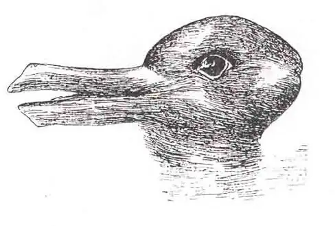
Answer
Playing on their expectations could be used to influence what they were most likely to see. For instance, telling a story about Peter Rabbit and then presenting this image would bias perception along rabbit lines.
Personal Application Question¶
5.1 Sensation versus Perception¶
39. Think about a time when you failed to notice something around you because your attention was focused elsewhere. If someone pointed it out, were you surprised that you hadn’t noticed it right away?
5.2 Waves and Wavelengths¶
40. If you grew up with a family pet, then you have surely noticed that they often seem to hear things that you don’t hear. Now that you’ve read this section, you probably have some insight as to why this may be. How would you explain this to a friend who never had the opportunity to take a class like this?
5.3 Vision¶
41. Take a look at a few of your photos or personal works of art. Can you find examples of linear perspective as a potential depth cue?
5.4 Hearing¶
42. If you had to choose to lose either your vision or your hearing, which would you choose and why?
5.5 The Other Senses¶
43. As mentioned earlier, a food’s flavor represents an interaction of both gustatory and olfactory information. Think about the last time you were seriously congested due to a cold or the flu. What changes did you notice in the flavors of the foods that you ate during this time?
5.6 Gestalt Principles of Perception¶
44. Have you ever listened to a song on the radio and sung along only to find out later that you have been singing the wrong lyrics? Once you found the correct lyrics, did your perception of the song change?
Adapted from Psychology 2e by OpenStax, licensed under CC BY 4.0. Access the original for free at openstax.org. Changes: converted to the web reading format of The Open Book Project.